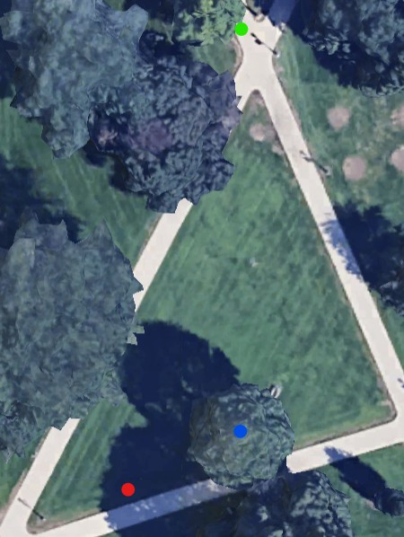

Stats
Par: 3
Distance: 179 ft
Hole Description
Starting from infront of the intersection, the target is the lamppost to the right of the tree ahead, the tree in the middle of the section of green is a mandatory, left.
Map key: green dot starting box, red dot target, blue dot mandatory.